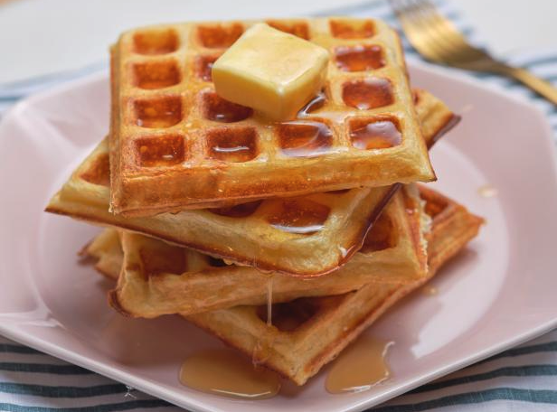

Recepie for waffles

Here you will learn about what is needed to make delicious Waffles.
Ingredients
- 2 eggs
- 2 cups all-purpose flour
- 1 and 3/4 cups of milk
- 1/2 cup vegetable oil
- 1 tablespoon of sugar
- 4 teaspoons of backing powder
- 1/4 teaspoon salt
- 1/2 teaspoon vanilla extract
Directions
- Preheat waffle iron.
- beat egss in a large bowl with hand beater.
- Add and beat in flour, milk, vegetable oil, sugar, baking powder, salt, and vanilla untill smooth.
- spray preheated waffle iron with non-stick cooking spray.
- Cook unitl golden brown.
- serve until hot.